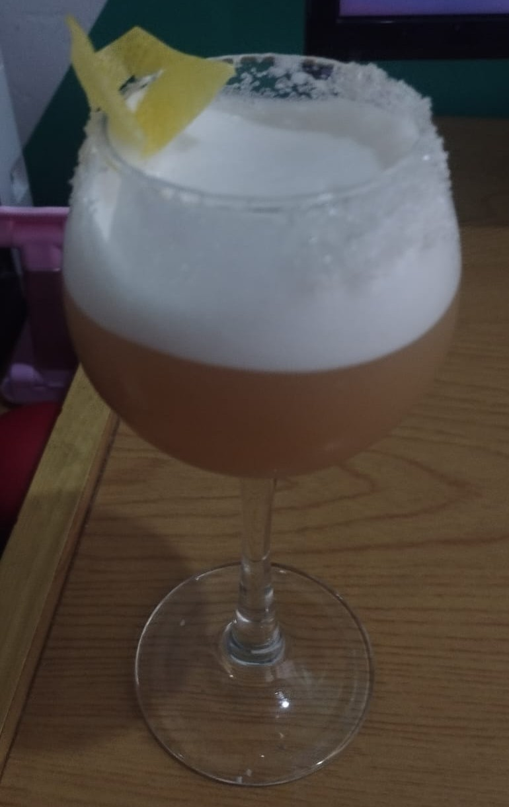

Earl Grey Marteani

Description
An innovative take on a gin sour dreamt up by Audrey Saunders, sweet,
foamy, and complex.
Ingredients
- 1½ oz. earl grey infused Beefeater gin
- 1 oz. simple syrup
- 1 oz. pasteurized egg white
- ¾ oz. Meyer lemon juice
-
Garnish:
Steps
-
To make infused gin, steep 2g of loose-leaf earl grey in 4½ oz. gin
for 12 hours.
- Add infused gin, syrup, egg white and lemon juice to shaker.
- Rim a coupe glass with sugar.
-
Reverse dry shake, shake with ice first, filter ice out and then shake
dry vigorously to foam it up.
- Strain into glass, garnish with a lemon peel.
Home